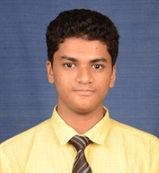

Ajay Balaji
CAD/CAM Engineer, Undergraduate Mechanical Engineering student
E-mail: ajaybj.v@gmail.com
Education
Anna University
B.E Mechanical Engineering, CGPA 8.92
Internships
Research Assistant
Indian Institute of Technology, Madras
May 2019 - July 2019
Carried out an experimental study on fused deposition modeling of low melting Tin-Silver alloy and its microstructure characteristics.
Did computational work on particle simulation using DEM method and assisted with determining materials and components for 3D printer based on goals and budgets.
Research Assistant
Indian Institute of Technology, Madras
December 2018 - January 2019
Worked in shape memory alloys and it's application in robotics.
Had exposure to Nickel-Titanium shape memory alloy and its applications.